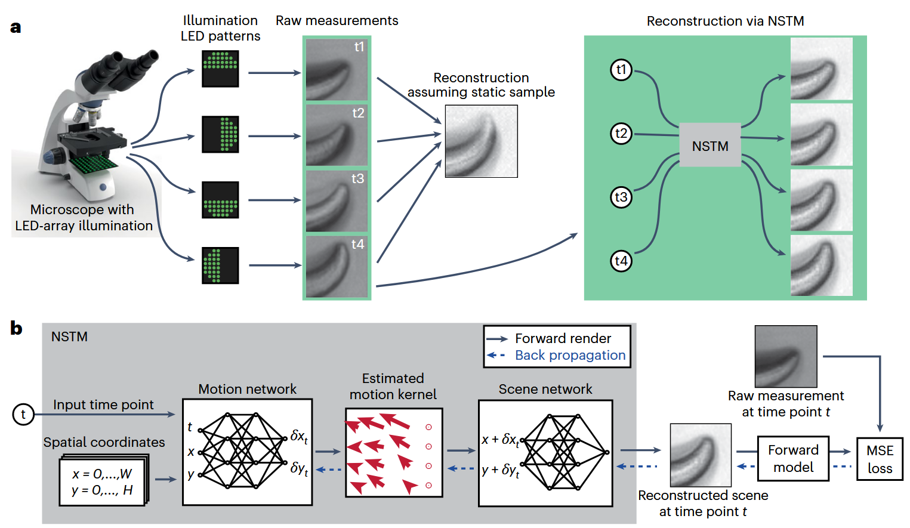

From Paper to Code: Understanding and Reproducing “Neural space–time model for dynamic multi-shot imaging”#
Code: GitHub Repository, Source Code in My Repo: ../../../../code/NeRF_optics/nstm-main/examples/notebook-DPC.ipynb
Paper Reading Notes#
1. Highlights#
NSTM is the first self-supervised framework to jointly learn per-pixel motion and scene content from raw multi-shot measurements. It supports any multi-shot system with a differentiable forward model, including DPC, 3D SIM, and DiffuserCam. Also it enables motion-aware reconstruction that resolves artifacts in dynamic scenes, improving biological interpretability.n.
2. Background#
Structured Illumination Microscopy (SIM) is a super-resolution imaging technique that breaks the diffraction limit. Traditional SIM achieves resolution enhancement by combining multiple images taken under varying illumination patterns. However, this leads to slow acquisition speed and motion artifacts when the sample moves during imaging. These methods have significantly expanded our ability to resolve biological structures, achieving breakthroughs in super-resolution [1], phase retrieval [2], and video reconstruction from single images [3].
However, a major limitation remains: motion artifacts. When imaging dynamic (moving) scenes, the assumption that the sample remains static during multi-shot acquisition breaks down. This mismatch leads to blurring, ghosting, and misinterpretation of structures. Traditional solutions try to either:
speed up hardware acquisition,
use pre-trained deep networks with strong priors,
or register images post hoc assuming simple motion.
These strategies are often system-specific and don’t generalize well, especially when ground truth data is unavailable or motion is complex.
3.Method Overview#
 The central innovation of this paper is to jointly predict motion and appearance of a dynamic scene using two neural networks—trained entirely in a self-supervised manner from raw multi-shot measurements.
As illustrated in Fig. 1a, the system takes a sequence of raw images \(I_{t_1}, I_{t_2}, I_{t_3}, I_{t_4}\) captured under different illumination conditions using an LED-array microscope. Each image corresponds to a slightly different time point, and due to sample motion, they do not align perfectly. A conventional reconstruction (middle) assumes a static scene and thus suffers from motion artifacts. In contrast, NSTM (right) reconstructs a clean scene at each time by modeling and correcting the motion.
3.1 Inputs and Outputs#
As shown in Fig. 1b, the inputs to the model are:
A spatial grid of coordinates \((x, y)\) covering the image domain,
A temporal coordinate \(t\) representing the time point of interest.
The outputs are:
A reconstructed scene \(o(x, y, t)\) at that time point,
And ultimately, a synthetic measurement \(\hat{I}_t\) generated by passing \(o(x, y, t)\) through the system’s forward model.
3.2 Network Structure (Fig. 1b)#
The model consists of two coordinate-based neural networks (a form of Implicit Neural Representation, or INR):
Motion Network
Takes as input \((x, y, t)\) and outputs the motion displacement vector \((\delta x_t, \delta y_t)\): $\( (\delta x_t, \delta y_t) = f_{\text{motion}}(x, y, t) \)\( This gives a pixel-wise motion kernel at time \)t$.Scene Network
Takes the motion-compensated coordinate \((x + \delta x_t, y + \delta y_t)\) and outputs the reconstructed scene value at that location: $\( o(x, y, t) = f_{\text{scene}}(x + \delta x_t, y + \delta y_t) \)\( Note: The scene network does not depend on \)t$ directly—it learns a static canonical scene which is warped over time by the motion field.
3.3 Forward Model and Self-Supervised Loss#
Once the reconstructed scene \(o(x, y, t)\) is obtained, it is passed through a forward model that simulates the image formation process of the actual imaging system: $\( \hat{I}_t = F(o(x, y, t)) \)$
The forward model \(F\) is differentiable and specific to the imaging setup (e.g., DPC, SIM, DiffuserCam). It models how the scene would appear under the same conditions as the real measurement \(I_t\).
The model is trained by minimizing the mean squared error (MSE) between the synthetic and real measurements: $\( \mathcal{L} = \sum_t \|F(o(x, y, t)) - I_t\|^2 \)$
This loss is backpropagated through both the forward model and the two networks. In this way, the motion and the scene are jointly learned from scratch, using only the raw measurements as supervision.
References#
[1] Huang, B., Bates, M. & Zhuang, X. (2009). Super-resolution fluorescence microscopy. Annu. Rev. Biochem.
[2] Park, Y., Depeursinge, C. & Popescu, G. (2018). Quantitative phase imaging in biomedicine. Nat. Photonics
[3] Antipa, N. et al. (2019). Video from stills: lensless imaging with rolling shutter. IEEE Int. Conf. Comput. Photography
Code Reproduction with Explanation: Neural space-time model example on differential phase contrast microscopy (DPC) data#
Jupyter lab demo for “Neural space-time model for dynamic multi-shot imaging” by Ruiming Cao, et al. (2024)
%load_ext autoreload
%autoreload 2
%matplotlib widget
import os
import sys
print("Current working directory:", os.getcwd())
target_path = os.path.abspath(os.path.join(os.getcwd(), "../../../code/NeRF_optics/nstm-main"))
print("Appending path:", target_path)
sys.path.insert(0, target_path)
import numpy as np
import jax
import jax.numpy as jnp
from flax import linen as nn
import matplotlib.pyplot as plt
from ipywidgets import interact, IntSlider
os.environ["CUDA_DEVICE_ORDER"]="PCI_BUS_ID"
os.environ["CUDA_VISIBLE_DEVICES"]="0"
import calcil as cc
import sys
sys.path.append("../../../../code/NeRF_optics/nstm-main")
from nstm import dpc_utils
from nstm import dpc_flow
from nstm import spacetime
from nstm import utils
from nstm.hash_encoding import HashParameters
Load data#
data_path = '../../../code/NeRF_optics/nstm-main/examples/dpc_data.npz'
print(os.path.abspath(data_path))
with np.load(data_path) as d:
img = d['img']
s = d['s']
num_frames = 4
wavelength = 0.525
na = 0.25
pixel_size = 0.454
dim_yx = (320, 1000)
extent = [0, pixel_size * dim_yx[1], pixel_size * dim_yx[0], 0]
param = utils.SystemParameters(dim_yx, wavelength, na, pixel_size, RI_medium=1.0, padding_yx=(0,0))
Visualize images#
f, ax = plt.subplots(1,1,figsize=(10, 4))
frame = []
def init():
frame.append(ax.imshow(img[0], clim=(-1., 1.), cmap='gray'))
ax.axis('off')
f.tight_layout()
init()
def updateFrame(i):
frame[0].set_data(img[i])
interact(updateFrame, i=IntSlider(min=0, max=3, step=1, value=0),)
DPC transfer function#
Visualizes the transfer functions used in Differential Phase Contrast (DPC) imaging
pupil: Generates the pupil function, defining the system’s frequency support based on NA and wavelength.Hu,Hp: Compute the absorption (Hu) and phase (Hp) transfer functions for each illumination source.The loop displays:
Top row: real part of
Hu(absorption transfer),Bottom row: imaginary part of
Hp(phase transfer), usingfftshiftto center the frequency components.
Each column corresponds to a different illumination direction.
These transfer functions are the core components of the DPC forward model. During reconstruction, the predicted scene (absorption and phase) is passed through the forward model using Hu and Hp to generate simulated measurements, which are then compared with actual measurements to compute the loss. Therefore, this step directly determines how the model “sees” and evaluates the scene during training.
pupil = cc.physics.wave_optics.genPupil(param.dim_yx, param.pixel_size, NA=param.na, wavelength=param.wavelength)
Hu, Hp = dpc_utils.gen_transfer_func(list_source=s, pupil=pupil, wavelength=param.wavelength, shifted_out=False)
f, axes = plt.subplots(2, s.shape[0], figsize=(12, 6))
for i in range(s.shape[0]):
axes[0, i].imshow(np.fft.fftshift(Hu[i].real), extent=(0,1,0,1))
axes[1, i].imshow(np.fft.fftshift(Hp[i].imag), extent=(0,1,0,1))
Baseline reconstruction#
⚠️ Warning: The code is still throwing an error.
Cell In[14], line 5
3 img=img[:,:,:320]
4 Hu=Hu[:,:,:320]
----> 5 abs_baseline, phase_baseline = dpc_utils.dpc_tikhonov_solver(img, Hu, Hp, 1e-4, 1e-4, param.wavelength)
File ~/2025/MIT/code/NeRF_optics/nstm-main/nstm/dpc_utils.py:137, in dpc_tikhonov_solver(imgs, Hu, Hp, amp_reg, phase_reg, wavelength)
136 def dpc_tikhonov_solver(imgs, Hu, Hp, amp_reg=5e-5, phase_reg=5e-5, wavelength=0.515):
--> 137 Hu=Hu.reshape(1, imgs.shape[1], 1, imgs.shape[-2],imgs.shape[-1]) #TODO
138 Hp=Hp.reshape(1, imgs.shape[1], 1, imgs.shape[-2],imgs.shape[-1])
139 AHA = [(Hu.conj() * Hu).sum(axis=0) + amp_reg, (Hu.conj() * Hp).sum(axis=0),
140 (Hp.conj() * Hu).sum(axis=0), (Hp.conj() * Hp).sum(axis=0) + phase_reg]
ValueError: cannot reshape array of size 409600 into shape (1,320,1,320,320)
```python
abs_baseline, phase_baseline = dpc_utils.dpc_tikhonov_solver(img, Hu, Hp, 1e-4, 1e-4, param.wavelength)
Reconstruction via neural space-time model#
Define NSTM parameters#
# model parameters
object_fine_hash_ratio = 0.4
object_base_hash_ratio = 0.05
motion_hash_ratio = 0.03
motion_hash_temporal = 2
hash_param = HashParameters(bounding_box=(np.array([-param.dim_yx[0] * 0.5, -param.dim_yx[1] * 0.5]),
np.array([param.dim_yx[0] * 1.5, param.dim_yx[1] * 1.5])),
n_levels=8, n_features_per_level=2, log2_hashmap_size=16,
base_resolution=np.array([dim_yx[0]*object_base_hash_ratio*2, dim_yx[1]*object_base_hash_ratio*2]),
finest_resolution=np.array([dim_yx[0]*object_fine_hash_ratio*2, dim_yx[1]*object_fine_hash_ratio*2]))
hash_param_motion_spacetime = HashParameters(
bounding_box=(np.array([0, 0, -1]), np.array([param.dim_yx[0], param.dim_yx[1], 1])),
n_levels=8, n_features_per_level=2, log2_hashmap_size=16, base_resolution=np.array([1,1,1]),
finest_resolution=np.round(np.array([dim_yx[0]*object_fine_hash_ratio*motion_hash_ratio, dim_yx[1]*object_fine_hash_ratio*motion_hash_ratio, motion_hash_temporal])))
object_mlp_param = spacetime.MLPParameters(net_depth=2, net_width=128,
net_activation=nn.gelu, skip_layer=4)
motion_mlp_param = spacetime.MLPParameters(net_depth=2, net_width=32,
net_activation=nn.elu, skip_layer=6)
spacetime_param = spacetime.SpaceTimeParameters(motion_mlp_param=motion_mlp_param,
object_mlp_param=object_mlp_param,
motion_embedding='hash_combined',
motion_embedding_param=hash_param_motion_spacetime,
object_embedding='hash', object_embedding_param=hash_param,
out_activation=lambda x: x)
Data loader#
batch_size = 4
pat_indices = np.eye(4)
time_norm = np.linspace(-1,1,4)
data_loader = cc.data_utils.loader_from_numpy({'img': img,
't': time_norm.reshape((-1)),
'ind_pat': pat_indices}, prefix_dim=(batch_size,),
seed=85472, )
sample_input_dict = next(data_loader)[0]
num_steps_per_epoch = len(next(data_loader))
initialize model#
model = dpc_flow.DPCFlow(param, s, spacetime_param, annealed_epoch=4000)
rng = jax.random.PRNGKey(0)
variables = model.init(rng, input_dict=sample_input_dict)
Define loss function#
l2 = cc.loss.Loss(dpc_flow.gen_loss_l2(margin=5), 'l2')
reg_absorp = cc.loss.Loss(dpc_flow.gen_l2_reg_absorp(freq_space=False), 'reg_l2_absorp', has_intermediates=True)
reg_phase = cc.loss.Loss(dpc_flow.gen_l2_reg_phase(freq_space=False), 'reg_l2_phase', has_intermediates=True)
total_loss = l2 + reg_absorp * 1e-4 + reg_phase*1e-4
Run reconstruction#
save_path = './checkpoint/DPC_c_elegans/'
recon_param = cc.reconstruction.ReconIterParameters(save_dir=save_path, n_epoch=5000,
keep_checkpoints=1,
checkpoint_every=5000,
output_every=100, log_every=100)
object_mlp_params = cc.reconstruction.ReconVarParameters(lr=1e-3, opt='adam',
opt_kwargs={'b1': 0.9, 'b2': 0.99, 'eps': 1e-15},
schedule='exponential',
schedule_kwargs={'transition_steps': 5e3, 'decay_rate': 0.1, 'transition_begin': 0},
update_every=1)
motion_mlp_params = cc.reconstruction.ReconVarParameters(lr=1e-5, opt='adam',
opt_kwargs={'b1': 0.9, 'b2': 0.99, 'eps': 1e-15},
schedule='exponential',
schedule_kwargs={'transition_steps': 5e3, 'decay_rate': 0.1, 'transition_begin': 0},
update_every=1)
var_params = {'params': {'spacetime': {'motion_mlp': motion_mlp_params, 'object_mlp': object_mlp_params,
'motion_embedding': motion_mlp_params, 'object_embedding': object_mlp_params},}}
recon_variables, recon = cc.reconstruction.reconstruct_multivars_sgd(model.apply, variables, var_params,
data_loader, total_loss, recon_param,
None, None)
recon_t = np.array([model.apply(recon_variables, np.array([t]), np.array([[0, 0]]),
method=lambda module, a, b: module.spacetime(a, b))[0] for i, t in enumerate(time_norm.reshape((-1)))])
Visualize the reconstruction#
f, axes = plt.subplots(2, 2, figsize=(10, 4), sharex=True, sharey=True)
frames = []
margin = 20
clim_ = (np.percentile(recon_t[..., 0], 0.1), np.percentile(recon_t[..., 0], 99))
clim_phase = (np.percentile(recon_t[..., 1], 70), np.percentile(recon_t[..., 1], 99.99))
def init():
frames.append(axes[0, 0].imshow(recon_t[0,margin:-margin,margin:-margin,0], cmap='gray', clim=clim_, interpolation='None'))
frames.append(axes[1, 0].imshow(recon_t[0,margin:-margin,margin:-margin,1], cmap='gray', clim=clim_phase, interpolation='None'))
frames.append(axes[0, 1].imshow(abs_baseline[margin:-margin, margin:-margin], cmap='gray',clim=clim_, interpolation='None'))
frames.append(axes[1, 1].imshow(phase_baseline[margin:-margin, margin:-margin], cmap='gray', clim=clim_phase, interpolation='None'))
axes[0,0].set_title('neural space-time model', fontsize=14)
axes[0,1].set_title('conventional reconstruction', fontsize=14)
axes[0,0].text(-0., 0.5, 'amplitude',
horizontalalignment='right',
verticalalignment='center',
rotation='vertical',
transform=axes[0,0].transAxes, fontsize=14)
axes[1,0].text(-0., 0.5, 'phase',
horizontalalignment='right',
verticalalignment='center',
rotation='vertical',
transform=axes[1,0].transAxes, fontsize=14)
axes[0,0].set_xlim([65, 765])
[[ax.axis('off') for ax in axe] for axe in axes]
f.tight_layout()
init()
def updateFrame(t):
frames[0].set_data(recon_t[t,margin:-margin,margin:-margin,0])
frames[1].set_data(recon_t[t,margin:-margin,margin:-margin,1])
interact(updateFrame, t=IntSlider(min=0, max=3, step=1, value=0))
Temporal interpolation#
recon_t_dense = np.array([model.apply(recon_variables, np.array([t]), np.array([[0, 0]]),
method=lambda module, a, b: module.spacetime(a, b))[0] for t in np.linspace(-1,1,100)])
f, axes = plt.subplots(2, 2, figsize=(10, 4), sharex=True, sharey=True)
frames, text = [], []
margin = 20
frame_number_interp = np.linspace(1, 4, 100)
clim_ = (np.percentile(recon_t[..., 0], 0.1), np.percentile(recon_t[..., 0], 99))
clim_phase = (np.percentile(recon_t[..., 1], 70), np.percentile(recon_t[..., 1], 99.99))
def init():
frames.append(axes[0, 0].imshow(recon_t[0,margin:-margin,margin:-margin,0], cmap='gray', clim=clim_, interpolation='None'))
frames.append(axes[1, 0].imshow(recon_t[0,margin:-margin,margin:-margin,1], cmap='gray', clim=clim_phase, interpolation='None'))
frames.append(axes[0, 1].imshow(abs_baseline[margin:-margin, margin:-margin], cmap='gray',clim=clim_, interpolation='None'))
frames.append(axes[1, 1].imshow(phase_baseline[margin:-margin, margin:-margin], cmap='gray', clim=clim_phase, interpolation='None'))
axes[0,0].set_title('neural space-time model', fontsize=14)
axes[0,1].set_title('conventional reconstruction', fontsize=14)
axes[0,0].text(-0., 0.5, 'amplitude',
horizontalalignment='right',
verticalalignment='center',
rotation='vertical',
transform=axes[0,0].transAxes, fontsize=14)
axes[1,0].text(-0., 0.5, 'phase',
horizontalalignment='right',
verticalalignment='center',
rotation='vertical',
transform=axes[1,0].transAxes, fontsize=14)
f.tight_layout()
axes[0,0].set_xlim([65, 765])
# text
text.append(axes[0,0].text(105.5, 55.6, f'frame {0}', color='black', fontsize=14, ))
# color bar
f.colorbar(frames[0], ax=axes[0], location='right', anchor=(-0.3, 0.5), shrink=0.5)
cbar_phase = f.colorbar(frames[1], ax=axes[1], location='right', anchor=(-0.3, 0.5), shrink=0.5, ticks=[0, 1, 2, 3, 4])
[[ax.axis('off') for ax in axe] for axe in axes]
init()
def updateFrameVideo(i):
text[0].set_text('frame {:0.2f}'.format(frame_number_interp[i]))
frames[0].set_data(recon_t_dense[i,margin:-margin,margin:-margin,0])
frames[1].set_data(recon_t_dense[i,margin:-margin,margin:-margin,1])
frames[2].set_data(abs_baseline[margin:-margin, margin:-margin])
frames[3].set_data(phase_baseline[margin:-margin, margin:-margin])
interact(updateFrameVideo, i=IntSlider(min=0, max=99, step=1, value=0))
Reference#
@article{cao2024neural, title={Neural space-time model for dynamic scene recovery in multi-shot computational imaging systems}, author={Cao, Ruiming and Divekar, Nikita and Nu{~n}ez, James and Upadhyayula, Srigokul and Waller, Laura}, journal={bioRxiv}, pages={2024–01}, year={2024}, publisher={Cold Spring Harbor Laboratory} }